|
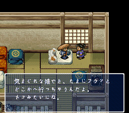 |
| 大婶：「你找小榉啊？小榉好像到神社祈愿去了……」 |
大婶：「小榉这孩子，行事有点反复无常，有时候真不知她跑到哪去了，就像猫一样……」
|
| 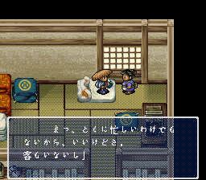 |
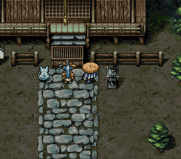 |
| 大婶：「不过在客人多的时候她不会这样……」 |
西林：「神啊，西林GB3快点出啊！」
小榉：「如果可以的话，我想与西林……相伴终生……永不分离。」 |
| 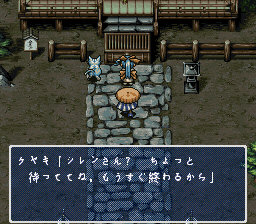 |
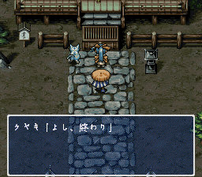 |
| 小榉：「西林君？请稍等一下，祈愿很快就完了。」 |
小榉：「好了。」 |
| 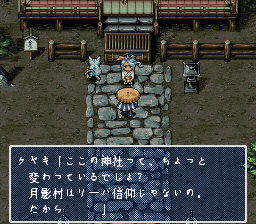 |
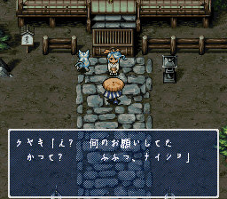 |
| 小榉：「这儿的神社是不是与其他地方有点不一样呢？因为月影村的村民是信仰“利巴”神的……」 |
西林：「不知道小榉姑娘许了什么愿呢？」
小榉：「嗯？什么愿望啊？嘻嘻，不告诉你……」 |
| 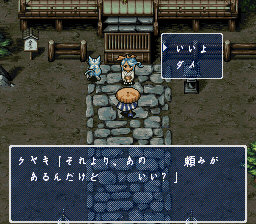 |
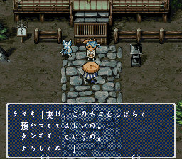 |
小榉：「是这样子的，我想……有点事拜托你，可以吗？」
西林：「小榉姑娘请说。」 |
小榉：「其实，我想麻烦你帮我照养这只小猫，拜托你了！」 |
| 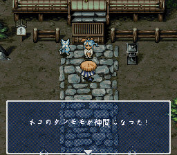 |
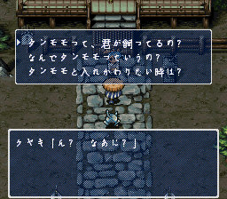 |
小榉把小猫塞给西林，小猫成为西林的仲间。
小榉：「太好了，以后就不用买猫食了，可以节约很多钱耶，哟活，我太聪明了！」 |
小榉：「你想问什么呢？想问‘这只小猫是你养的吗’请按1，想问‘为什么叫小猫为毯毛毛’请按2，想问‘想与小猫交换位置怎么办’请按3，什么都不想问请按0。」 |
| 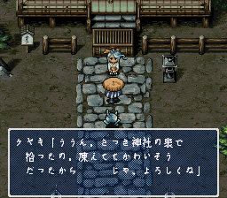 |
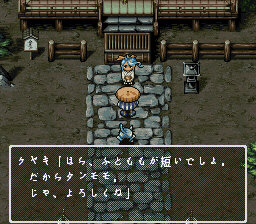 |
西林：「我按1。」
小榉：「嗯，刚才在神社后面拾到的，小猫被冻得浑身颤抖，好可怜啊……所以，我想把小猫托付给你照养，一切拜托你了。」 |
西林：「我按2。」
小榉：「你看，这只小猫的毛摸起来柔软舒服，像毛毯一样，所以我就叫它‘毯毛毛’，一切拜托你了。」 |